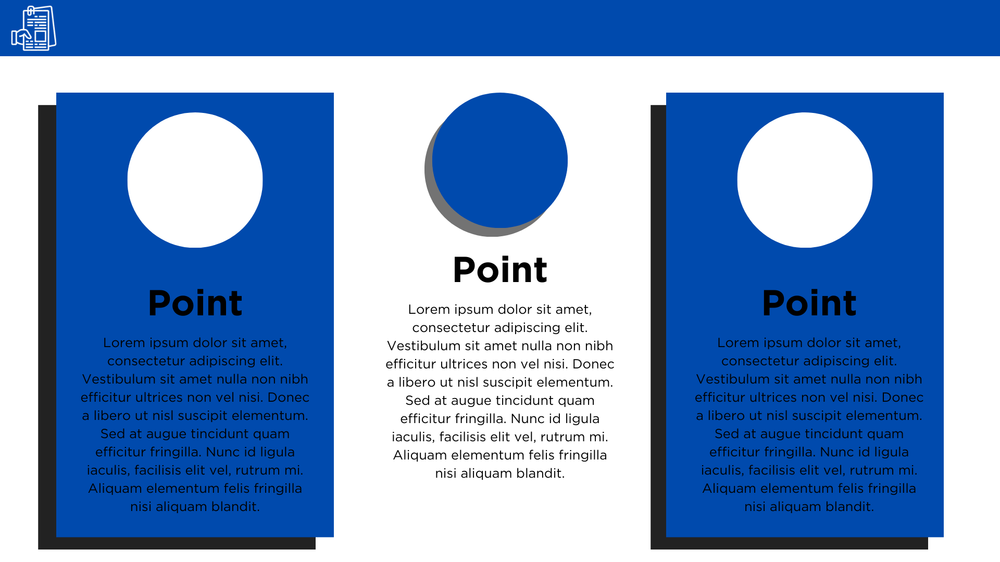
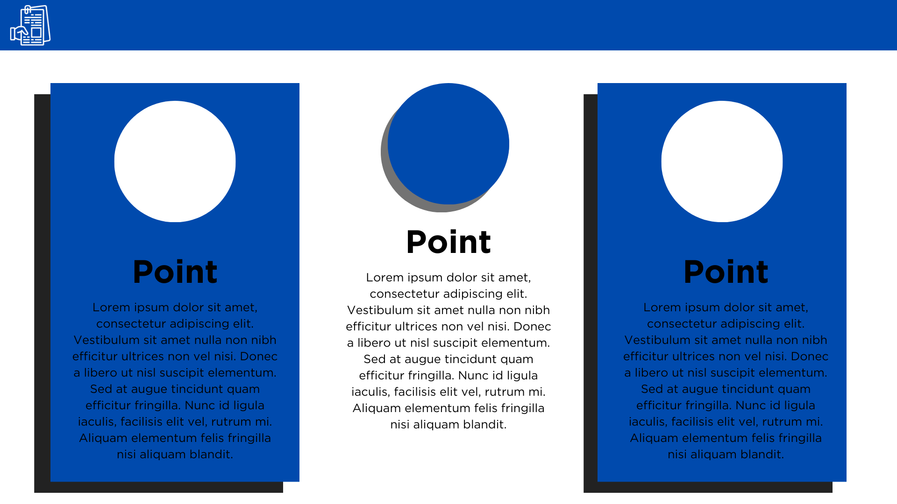
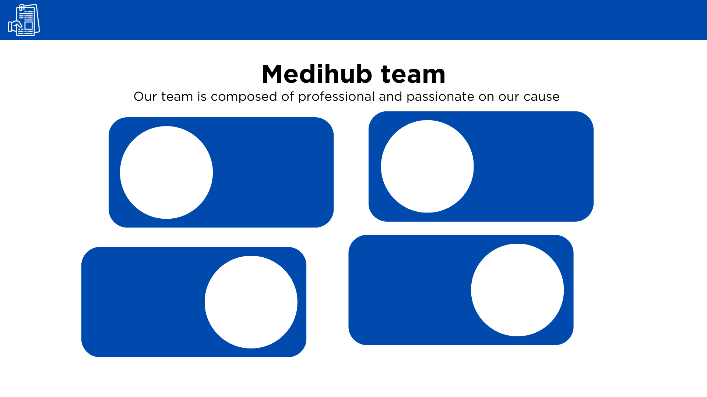
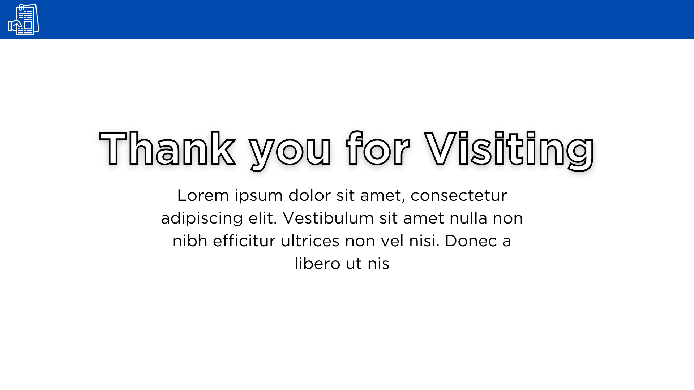
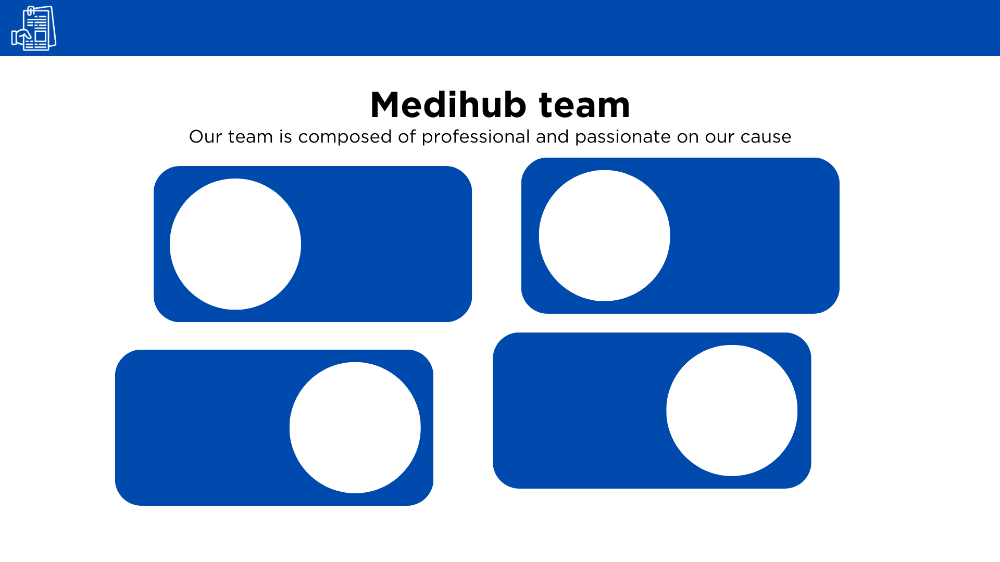
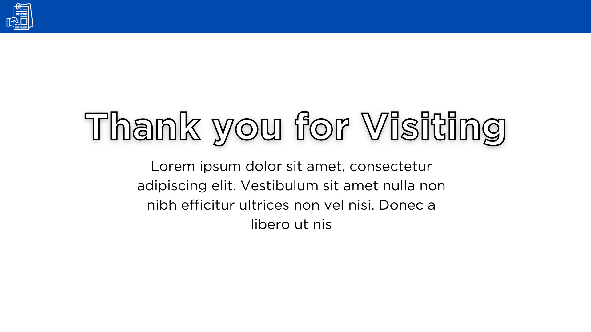

A healthcare website that centralizes and securely maintains your medical records.
We aim to enhance patient care by providing healthcare providers with instant access to your complete medical history, including past diagnoses, treatments, and allergies. From this, you can be more informed and make personalized medical decisions, reducing medical errors and improving treatment outcomes.
The electronic health records kept in this system also simplifies appointment scheduling, billing, and insurance claims to reduce paperwork and administrative overhead for both healthcare providers, and of course, to you, our valuable patients.
Lastly, we want to empower you to take control of your health. Access to your own medical records will allow you to better understand your health, monitor chronic conditions, and actively engage in your healthcare decisions.
All of your saved records can be viewed online through any device with internet connectivity, anytime and anywhere in a single platform in just a few clicks. You can download your data or check it from time to time with ease, instead of going to hospitals to acquire physical records and submit them physically to other hospitals in your future medical consultations.
We also value your records. Physical copies of documents could be misplaced without the person noticing it. Moreover, physical copies of files are more prone to natural disasters. You can store files utilizing our system without being concerned about the possible risk or harm of your records. By using our system, we can ensure your files' safety.
This system has embedded cloud storage where all medical records are transferred, compiled, and saved. This helps you save effort from storing your digital copies of medical records on your device's default file management app and occupying space, and random navigation from various files stored on the app to find the right file.
Without the need for physical copies or faxing, you can share your medical records with healthcare professionals, specialists, or second opinions. By utilizing our system, you can have quicker and more accurate medical consultations and treatment decisions.
Meet this team's astounding professionals committed on delivering this healthcare system
"Thank you for selecting MediHub as your dependable destination for healthcare information and convenience. We hope you find our platform to be a useful and valuable resource for your healthcare requirements.
Thank you for joining the MediHub community. We look forward to assisting you on your path to a healthy tomorrow."

 



 


